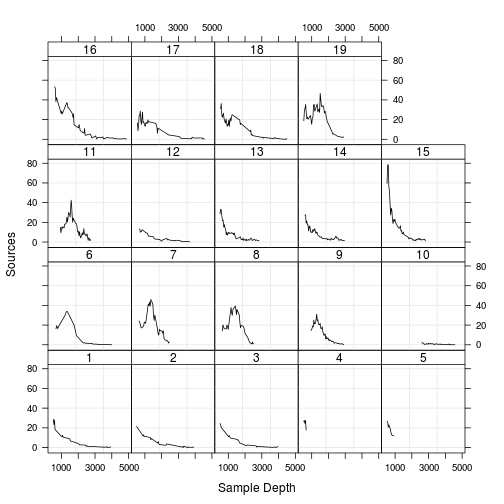

Simon Queenborough
Evolution, Ecology & Organismal Biology, OSU
R input (copy and paste into R window)
2 + 2 # R output (below)
## [1] 4
2 + 2
## [1] 4
2 + 2
## [1] 4
log(2)
## [1] 0.6931
log(10)
## [1] 2.303
Fails:
2 + 2*w
Need to define 'w'
w <- 10
2 + 2 * w
## [1] 22
library(lattice)
dat <- read.table('data/ISIT.txt',header=TRUE,sep='\t')
xyplot(Sources~SampleDepth|factor(Station),data=dat,
xlab='Sample Depth',ylab='Sources',
strip=function(bg='white', ...)
strip.default(bg='white',...),
panel=function(x,y){
panel.grid(h=-1,v=2)
I1=order(x)
llines(x[I1],y[I1],col=1)})

It is impossible to remember all the commands and programs!
Therefore, VERY important to:
# a comment
# load libraries/packages
library(lattice)
# read in data
dat <- read.table('data/ISIT.txt',header=TRUE,sep='\t')
# Start plotting:
# - plot Sources as a function of SampleDepth,
# - use a panel for each Station
# - use colour black (col = 1), and
# - specify x and y labels (xlab and ylab).
# - use white background in the boxes that contain station labels
xyplot(Sources~SampleDepth|factor(Station),data=dat,
xlab='Sample Depth',ylab='Sources',
strip=function(bg='white', ...)
strip.default(bg='white',...),
panel=function(x,y){
# avoid grid lines
# avoid spaghetti plots
# plot data as lines (in black)
panel.grid(h=-1,v=2)
I1=order(x)
llines(x[I1],y[I1],col=1)})
# load libraries/packages
library(lattice)
# read in data
dat <- read.table('data/ISIT.txt', header = TRUE, sep = '\t')
# Start plotting:
# - plot Sources as a function of SampleDepth,
# - use a panel for each Station
# - use colour black (col = 1), and
# - specify x and y labels (xlab and ylab).
# - use white background in the boxes that contain station labels
xyplot(Sources ~ SampleDepth | factor(Station), data = dat,
xlab = 'Sample Depth', ylab = 'Sources',
strip = function(bg = 'white', ...)
strip.default(bg = 'white', ...),
panel = function(x, y){
# avoid grid lines
# avoid spaghetti plots
# plot data as lines (in black)
panel.grid(h = -1, v = 2)
I1 = order(x)
llines(x[I1], y[I1], col = 1)
} # close panel()
) # close xyplot
Good style is important because while your code only has one author, it will usually have multiple readers
Hadley Wickham
Text editors use unformatted plain text with no hidden characters or code. Thus, what you paste in to R is what runs. Most text editors also have nice syntax highlighting. Word processors such as MS-Word contain formatted text.
It is possible to do graphics that would maybe be faster in Excel ...
install.packages("foo")
library(foo) # or
require(foo)
q()
Save workspace? Usually not.
Better to save commands as text files
rm(list = ls(all = TRUE))